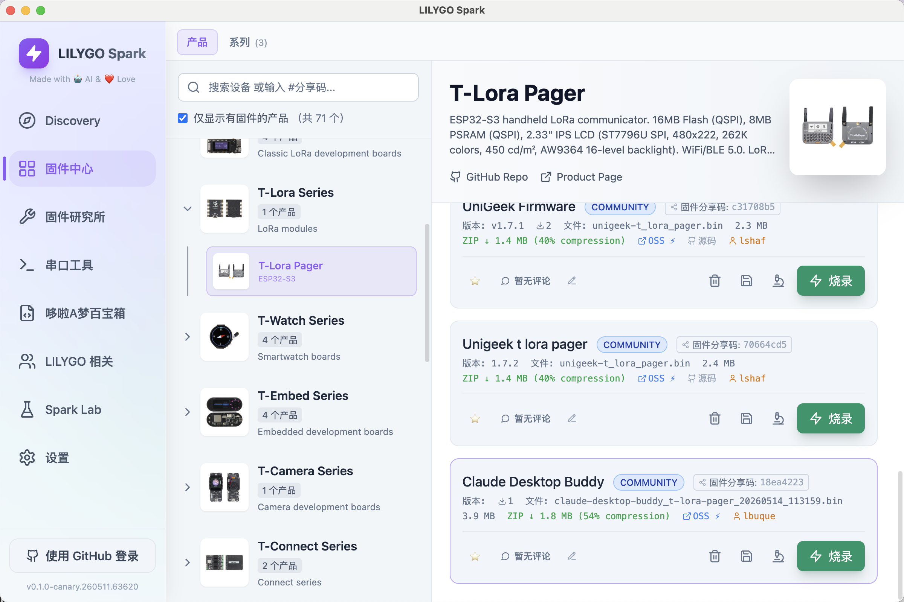

English
Englishclaude-desktop-buddy
Claude for macOS and Windows can connect Claude Cowork and Claude Code to
maker devices over BLE, so developers and makers can build hardware that
displays permission prompts, recent messages, and other interactions. We've
been impressed by the creativity of the maker community around Claude -
providing a lightweight, opt-in API is our way of making it easier to build
fun little hardware devices that integrate with Claude.
Building your own device? You don't need any of the code here. See
REFERENCE.md for the wire protocol: Nordic UART
Service UUIDs, JSON schemas, and the folder push transport.
As an example, we built a desk pet on ESP32 that lives off permission
approvals and interaction with Claude. It sleeps when nothing's happening,
wakes when sessions start, gets visibly impatient when an approval prompt is
waiting, and lets you approve or deny right from the device.

Hardware
The firmware targets the LILYGO T-Lora pager (ESP32-S3 + LoRa). It uses
the LilyGoLib library for display, IMU, and peripheral drivers.
Flashing

Pairing
To pair your device with Claude, first enable developer mode (Help →
Troubleshooting → Enable Developer Mode). Then, open the Hardware Buddy
window in Developer → Open Hardware Buddy…, click Connect, and pick
your device from the list. macOS will prompt for Bluetooth permission on
first connect; grant it.


Once paired, the bridge auto-reconnects whenever both sides are awake.
If discovery isn't finding the pager:
- Make sure it's awake (any button press)
- Check the pager's settings menu → bluetooth is on
Controls
The pager has three controls: a Center button (rotary click, top right),
a Rotary encoder (scroll wheel, top right), and a Boot button (bottom
side).
| Normal | Pet | Info | Approval | |
|---|---|---|---|---|
| Center (single) | next screen | next screen | next screen | approve |
| Center (double) | screen off/on | screen off/on | screen off/on | — |
| Hold Center (~1s) | menu | menu | menu | menu |
| Rotary | scroll transcript | next page | next page | — |
| Boot (single) | — | — | — | deny |
| Boot (~6s) | deep sleep | |||
| Shake | dizzy | — | ||
| Face-down | nap (energy refills) |
The screen auto-powers-off after 30s of no interaction (kept on while an
approval prompt is up). Any button press wakes it.
ASCII pets
Eighteen pets, each with seven animations (sleep, idle, busy, attention,
celebrate, dizzy, heart). Menu → "next pet" cycles them with a counter.
Choice persists to NVS.
GIF pets
If you want a custom GIF character instead of an ASCII buddy, drag a
character pack folder onto the drop target in the Hardware Buddy window. The
app streams it over BLE and the pager switches to GIF mode live. Settings
→ delete char reverts to ASCII mode.
A character pack is a folder with manifest.json and 96px-wide GIFs:
{
"name": "bufo",
"colors": {
"body": "#6B8E23",
"bg": "#000000",
"text": "#FFFFFF",
"textDim": "#808080",
"ink": "#000000"
},
"states": {
"sleep": "sleep.gif",
"idle": ["idle_0.gif", "idle_1.gif", "idle_2.gif"],
"busy": "busy.gif",
"attention": "attention.gif",
"celebrate": "celebrate.gif",
"dizzy": "dizzy.gif",
"heart": "heart.gif"
}
}
State values can be a single filename or an array. Arrays rotate: each
loop-end advances to the next GIF, useful for an idle activity carousel so
the home screen doesn't loop one clip forever.
GIFs are 96px wide; height up to ~140px stays on a 135×240 portrait screen.
Crop tight to the character — transparent margins waste screen and shrink
the sprite. tools/prep_character.py handles the resize: feed it source
GIFs at any sizes and it produces a 96px-wide set where the character is the
same scale in every state.
The whole folder must fit under 1.8MB —
gifsicle --lossy=80 -O3 --colors 64 typically cuts 40–60%.
See characters/bufo/ for a working example.
If you're iterating on a character and would rather skip the BLE round-trip,
tools/flash_character.py characters/bufo stages it into data/ and runs
pio run -t uploadfs directly over USB.
The seven states
| State | Trigger | Feel |
|---|---|---|
sleep |
bridge not connected | eyes closed, slow breathing |
idle |
connected, nothing urgent | blinking, looking around |
busy |
sessions actively running | sweating, working |
attention |
approval pending | alert, LED blinks |
celebrate |
level up (every 50K tokens) | confetti, bouncing |
dizzy |
you shook the pager | spiral eyes, wobbling |
heart |
approved in under 5s | floating hearts |
Project layout
src/
main.cpp — loop, state machine, UI screens
buddy.cpp — ASCII species dispatch + render helpers
buddies/ — one file per species, seven anim functions each
ble_bridge.cpp — Nordic UART service, line-buffered TX/RX
character.cpp — GIF decode + render
data.h — wire protocol, JSON parse
xfer.h — folder push receiver
stats.h — NVS-backed stats, settings, owner, species choice
characters/ — example GIF character packs
tools/ — generators and converters
Availability
The BLE API is only available when the desktop apps are in developer mode
(Help → Troubleshooting → Enable Developer Mode). It's intended for
makers and developers and isn't an officially supported product feature.